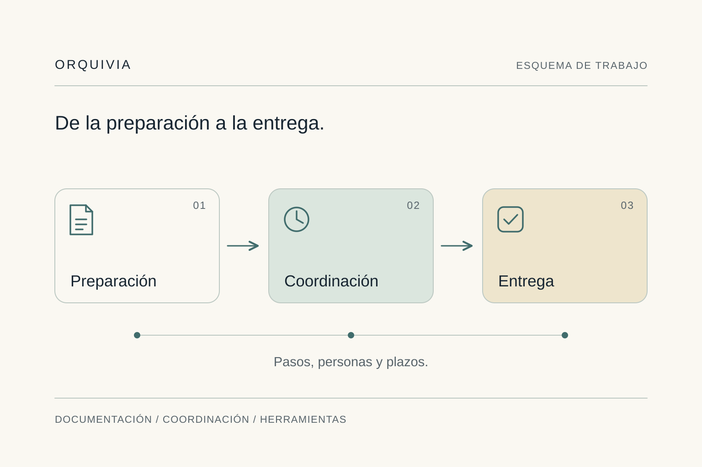
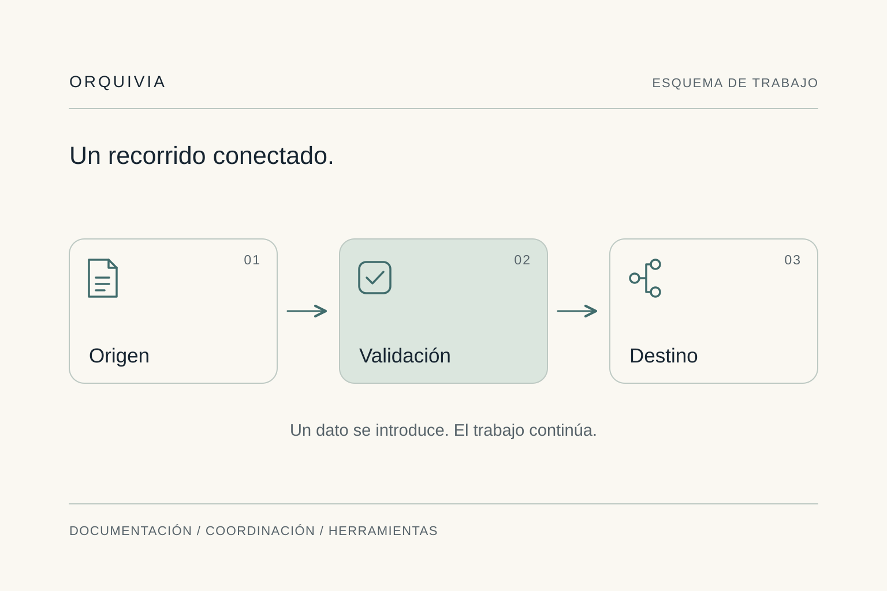

Buscar.
Preguntar.
Volver a comprobar.
- La documentación sigue criterios diferentes.
- Para conocer el estado hay que reconstruir la conversación.
- Los datos de gestión se actualizan en varios sitios.
Consultoría de procesos y herramientas de gestión
Organizamos documentación, coordinamos actuaciones concretas y creamos aplicaciones de gestión a medida. Para empresas y equipos que trabajan por proyectos o encargos.
El trabajo detrás de cada entrega
Reunir documentos, saber qué consulta sigue abierta o revisar qué se ha presupuestado puede exigir más seguimiento del necesario. Ordenamos ese recorrido y creamos la herramienta que falta para avanzar con información clara.
Qué hacemos
Tres formas de resolver necesidades de gestión. Empezamos por la que condiciona tu trabajo y el resultado que quieres conseguir.
Organizamos documentación y definimos criterios para encontrarla, utilizarla y compartirla. Desde los planos de un proyecto hasta los documentos que necesita una entrega.

Planificamos y coordinamos actuaciones concretas: qué hace falta, quién interviene y cómo encajan los tiempos. Un alcance definido para llevar el trabajo hasta la entrega.

Creamos apps para gestionar presupuestos, facturas y gastos, o seguir consultas de un proyecto de forma visual sobre un plano. Automatizamos pasos y conectamos plataformas cuando el proceso lo necesita.

Experiencia aplicada
Experiencia en arquitectura y retail, pequeños negocios y equipos de postventa. El punto de partida siempre es cómo se trabaja en cada empresa.
Hemos ordenado planos de distintos proyectos y establecido un criterio común para consultarlos y compartirlos.
Ver el caso realHemos coordinado la colocación de materiales con un plazo de ejecución muy ajustado, organizando los recursos y la secuencia de trabajo.
Ver el enfoqueHemos creado aplicaciones de gestión para pequeños negocios y una herramienta para que project managers sigan las consultas de forma visual sobre un plano.
Ver el enfoqueValue Retail · Documentación técnica
Proyectos existentes, dibujados con criterios distintos. Una necesidad concreta: que todos sus planos se pudieran leer y compartir con los clientes bajo un mismo estándar.
Analizamos la documentación, identificamos sus elementos comunes y los convertimos en una base gráfica compartida.
Ver el caso de Value RetailCómo trabajamos
Entendemos cómo se trabaja, proponemos una intervención concreta y la llevamos a la práctica. Conservamos lo que funciona y comprobamos el resultado del cambio.
Conoce nuestra consultoríaEntender
Escuchamos a las personas que conocen el proceso. Identificamos qué funciona, dónde se acumulan esperas y qué impacto tienen.
Priorizar
Proponemos dónde actuar primero y qué resultado debe mejorar: una entrega, el seguimiento o la gestión. Definimos el alcance antes de empezar.
Diseñar
Organizamos la documentación, preparamos la coordinación o desarrollamos la herramienta para el alcance elegido. Probamos el recorrido antes de ampliarlo.
Comprobar
Contrastamos el resultado con la situación inicial, corregimos incidencias y entregamos documentación y formación para utilizar la solución en el día a día.
La persona detrás de Orquivia
Soy Nicole Pereyra, fundadora de Orquivia. Mi trabajo conecta organización, coordinación y desarrollo de herramientas de gestión. Parto de lo que ocurre en cada empresa para convertir una necesidad concreta en una solución utilizable.
He trabajado con documentación de proyectos, actuaciones con plazos ajustados y aplicaciones para pequeños negocios y equipos de gestión. Los contextos cambian; entender cómo se trabaja es lo que permite diseñar una respuesta que encaje.
Hablemos de tu proyecto
Founder
Trabajamos sobre un alcance concreto: organizar documentación, coordinar una actuación o crear una herramienta. La dirección de la empresa sigue en vuestro equipo; las responsabilidades de cada intervención quedan definidas en la propuesta.
Tenemos experiencia con arquitectura, retail y project managers, además de pequeños negocios y equipos de postventa. El punto en común es una gestión que necesita orden, coordinación o una herramienta adaptada al trabajo real.
Primero comprobamos qué pueden hacer las herramientas actuales y dónde falta una conexión o un flujo. Proponemos una app a medida cuando el proceso necesita funciones que esas herramientas no cubren.
Con una conversación breve sobre vuestra situación y el resultado que buscáis. Si encaja, concretamos un alcance, las personas implicadas y una propuesta antes de iniciar el trabajo.
El trabajo se organiza por fases de análisis, desarrollo, pruebas y puesta en marcha. La propuesta detalla las sesiones necesarias y las personas que participan.
Depende del proceso, las herramientas y el alcance. Tras la conversación inicial proponemos fases, entregables, calendario y presupuesto. Cualquier continuidad se acuerda por separado.
Registramos el punto de partida y comprobamos indicadores del proceso: plazo de respuesta, esperas, tareas repetidas o tiempo hasta una entrega. Cuando el hito condiciona la facturación, también observamos ese recorrido. Los resultados se contrastan con datos del despacho.
La solución implementada, su documentación y la formación incluida en la propuesta. El mantenimiento y las futuras ampliaciones se detallan por separado.
Ideas para la gestión de proyectos

Cuando un nuevo encargo obliga a repetir la misma información, conectar el alta con carpetas, documentos y tareas puede dar al despacho más capacidad.
Si responder al cliente exige cruzar mensajes y hojas, una vista de hitos y pendientes puede reunir el contexto necesario para una respuesta clara.
Empezamos por escucharte
En 15 minutos situamos una tarea concreta y el resultado que buscas. No hace falta preparar una presentación ni explicar toda tu empresa.
Exploremos tu proyecto